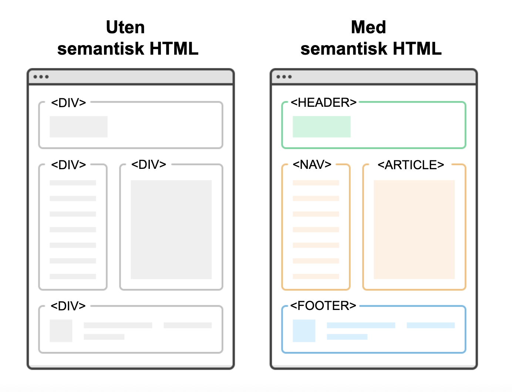

Lister i HTML
Skal du lage en oppskrift eller vise steg i rekkefølge, er en nummerert liste perfekt!
Eksempel på nummerert liste i kode og resultat:
<ol>
<li>Varm opp ovnen</li>
<li>Bland ingredienser</li>
<li>Sett i ovnen</li>
</ol>
- Varm opp ovnen
- Bland ingredienser
- Sett i ovnen
Skal du i stedet vise en liste med ingredienser, bruker du en punktliste:
<ul>
<li>Mel</li>
<li>Sukker</li>
<li>Egg</li>
</ul>
Begge listetyper bruker <li> (list item), men forskjellen er hva du pakker dem inn i:
<ol> gir tall, mens <ul> gir punkter.
Struktur
Når du skriver HTML, er det smart å bruke semantiske tagger. Dette betyr at du bruker tagger som gir
mening for innholdet, som for eksempel <header> for toppdelen av siden,
<nav> for navigasjon, <main> for hovedinnholdet, og
<footer> for bunnen av siden.

Dette gjør koden lettere å forstå, og det hjelper søkemotorer og skjermlesere å finne fram på
siden
din.
Lenker
Lenker er det som gjør nettsider koblet sammen. Ha en egen fil for CSS og en egen fil for
JavaScript.
Filen med HTML-koden din må ha lenkene til de andre filene for å hente informasjonen. CSS-lenken
skal
stå i
<head>, mens JS-lenken står i bunnen, rett over </body>.
Du lager en lenke med <a>-taggen.
For eksempel kan du lage lenke til CSS-fil slik:
<link rel="stylesheet" href="style.css">
For å lenke til en JavaScript-fil ser det slik ut:
<script src="script.js"></script>
Og lenker til andre nettsider kan skrives slik:
<a href="https://www.aftenposten.no">Gå til Aftenposten</a>